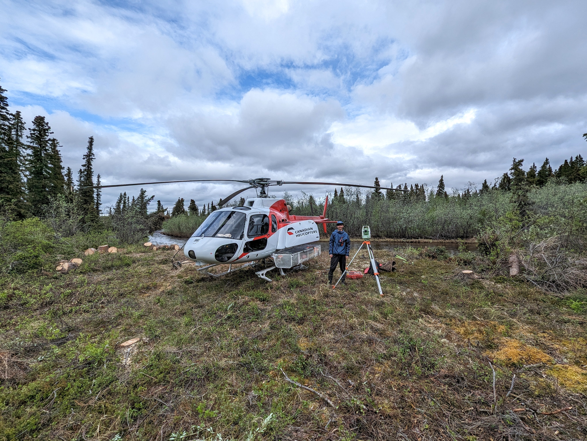

About Me
Welcome! I'm Mitchell Aitken, a geomatics engineering student in my final year at the University of Calgary with a minor in energy and environment. Part of geomatics engineering is all about using spatial information for mapping and analysis, and I'm enthusiastic about applying these principles to tackle environmental challenges in our ever-changing world.
This website is a snapshot of my academic and professional journey, showcasing my career path and skills in geomatics, energy, and environment.
But it's not all about academics! I believe in a balanced life. Join me as I share my sports adventures and hobbies outside the classroom. Thanks for stopping by, and let's explore this journey together!
